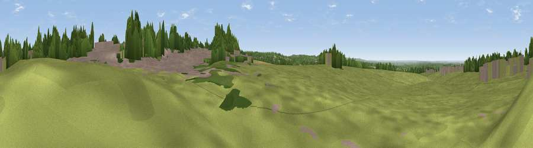

The Mound
#33100 in England · top 39% of its area beats it · near Tattenham CornerWhere it is
The exact computed spot (TQ 22505 58114). Click the marker for map links.
The view, rendered

A 360° render of this exact spot computed from the terrain model, tree cover and land cover — summer colours, afternoon light, calibrated against photographs of famous viewpoints. Real trees, hedges and buildings will differ in detail.
The panorama
Grey silhouette: terrain skyline in each direction (720 bearings, Earth curvature and refraction included). Dashed green: skyline with trees (+15 m) and buildings (+8 m) as obstacles. Blue strip: how far the ground is visible on each bearing.
Where the view opens
Wedge length = distance to the farthest visible ground on that bearing (vegetation-aware). Rings at 10, 25 and 50 km.
What fills the view
65% grassland · 21% woodland · 14% built-up ·
Angular shares of the visible panorama (visual magnitude), not map area. Landscape diversity 0.40 (0–1 Shannon).
Key numbers
More beautiful places nearby
The staircase of upgrades: each row has a higher view potential than everything closer. Driving times are estimates from straight-line distance, calibrated against real road routing — check an actual route before setting out.
| Place | Direction | Drive | Score |
|---|---|---|---|
| Viewpoint near Tattenham Corner | NW · 1 km | ~2 min | 46.3 |
| Viewpoint near Lower Kingswood | S · 6 km | ~13 min | 67.8 |
| Box Hill | SSW · 7 km | ~14 min | 70.4 |
| Viewpoint near Box Hill Village | SSW · 7 km | ~15 min | 71.0 |
| Viewpoint near Coldharbour | SSW · 17 km | ~29 min | 71.3 |
| Viewpoint near Fernhurst | SW · 42 km | ~62 min | 75.1 |
| Wolstonbury Hill | S · 45 km | ~65 min | 79.6 |
| Viewpoint near Westmeston | SSE · 46 km | ~66 min | 81.1 |
51.30897, -0.24384 · source: osm viewpoint · position refined by local search. Computed location — check access rights before visiting.